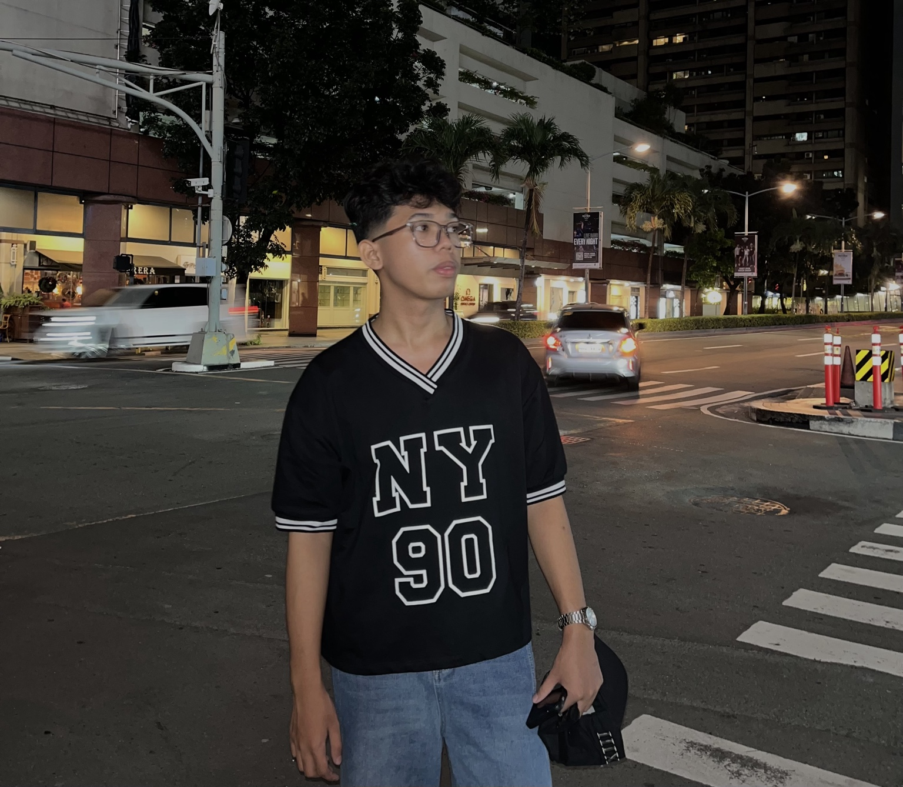
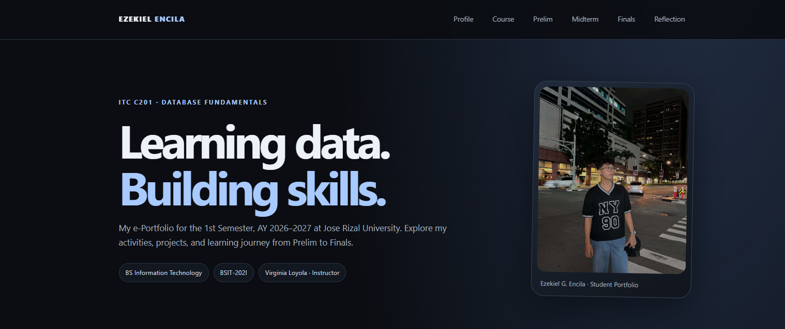
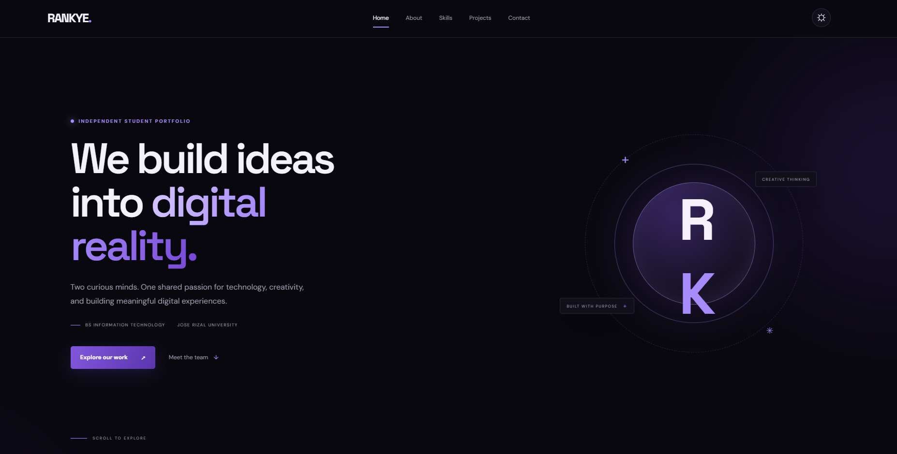
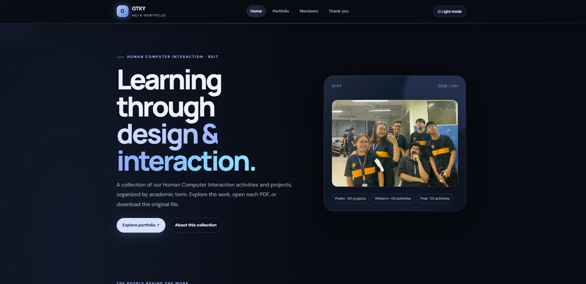
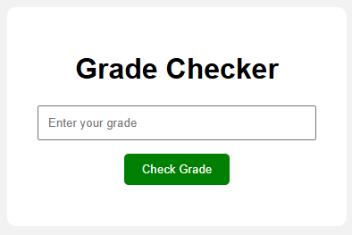
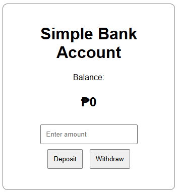
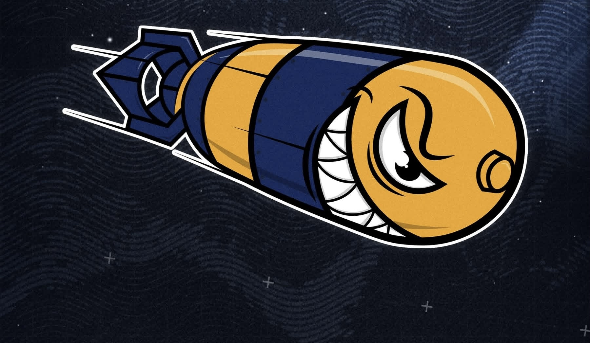
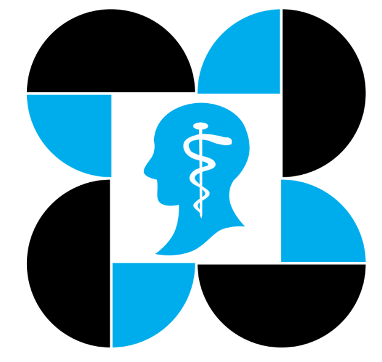

01
Currently Exploring
↗HTMLCSSJavaScriptJavaSQLOracle DatabaseDatabase DesignERD & Normalization
Hello, I'm
A second-year Bachelor of Science in Information Technology student exploring web development, programming, and database design.

I'm Ezekiel G. Encila, a second-year BSIT student at Jose Rizal University.
I'm continuously developing my knowledge in information technology through coursework, hands-on exercises, and personal projects. My current areas of focus include web development, programming, and database design.
A snapshot of the technologies I'm exploring and the tools I use for coursework and projects.
Academic work and exercises built while learning, experimenting, and applying concepts.

ACTUAL WEBSITE / 01A course e-portfolio created to organize and present academic activities, database exercises, and learning reflections for ITC-C201.
Visit live project ↗
A collaborative portfolio website presenting the team's work, creative direction, and selected academic outputs.

A collection of the group's Human-Computer Interaction activities and outputs, organized by academic term.

A simple web-based activity that accepts a grade and checks the result using programmed conditions.
Visit live project ↗
A basic banking interface that displays a balance and lets users deposit or withdraw an entered amount.
Visit live project ↗Group project contributions will be listed according to the specific tasks completed by the student.

Jose Rizal University

Completed 80 hours of Work Immersion from January 20 to February 3, 2025, including inventory and encoding of research studies.
Feel free to reach out through any of the channels below.